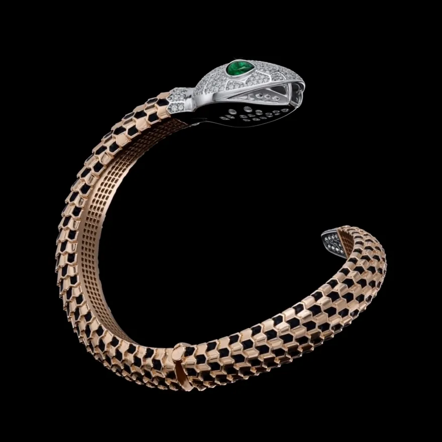

پیچیده به دور مچ،
آرام و بیصدا
دستبند مار — طلای ۱۸ عیار، الماس با گواهی GIA
رزرو نمایش حضوری۵۴٫۷۹ گرم طلا
دستساز در کارگاه علیپور.
زمرد در چشم،
الماس در پوست
تراش و نشان به دست جواهرساز.
کد ۵۸۵۹۱ — تبریز

آنچه میماند،
دیده میشود
دستبند مار دور مچ میپیچد و در جای خود مینشیند؛ نه بسته میشود، نه رها میکند. حلقهٔ باز آن با فشار انگشت اندازه میگیرد و روی هر مچی مینشیند.
یک نماد، چهار روایت


شصت سال، یک نام
خانهٔ علیپور با یک ویترین کوچک در تبریز آغاز شد و امروز به دست نسل دوم اداره میشود. آنچه در این شصت سال تغییر نکرده، ترتیب کار است: سنگ پیش از طرح انتخاب میشود، و هیچ قطعهای بدون سند از کارگاه بیرون نمیرود.

آنچه با دست
ساخته میشود
آنچه حاج حمید علیپور در سال ۱۳۴۰ آغاز کرد، امروز به دست نسل دوم ادامه دارد. هر قطعه در کارگاه خودمان طراحی و ساخته میشود.
آنچه با قطعه به شما میرسد
جواهرات
دفترچهٔ خانه
دفترچهٔ خانهٔ علیپور؛ یادداشتهایی دربارهٔ سنگ، ساخت، نقش مار و آنچه از سال ۱۳۴۰ تا امروز در تبریز گذشته است.